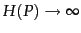
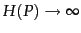
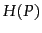
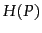

Heaps' law was discovered by Heaps (1978). See also Baeza-Yates and Ribeiro-Neto (1999). A detailed study of vocabulary growth in large collections is (Williams and Zobel, 2005). Zipf's law is due to Zipf (1949). Witten and Bell (1990) investigate the quality of the fit obtained by the law. Other term distribution models, including K mixture and two-poisson model, are discussed by Manning and Schütze (1999, Chapter 15). Carmel et al. (2001), Büttcher and Clarke (2006), Blanco and Barreiro (2007), and Ntoulas and Cho (2007) show that lossy compression can achieve good compression with no or no significant decrease in retrieval effectiveness.
Dictionary compression is covered in detail by Witten et al. (1999, Chapter 4), which is recommended as additional reading.
Subsection 5.3.1 is based on (Scholer et al., 2002). The authors find that variable byte codes process queries two times faster than either bit-level compressed indexes or uncompressed indexes with a 30% penalty in compression ratio compared with the best bit-level compression method. They also show that compressed indexes can be superior to uncompressed indexes not only in disk usage, but also in query processing speed. Compared with VB codes, ``variable nibble'' codes showed 5% to 10% better compression and up to one third worse effectiveness in one experiment (Anh and Moffat, 2005). Trotman (2003) also recommends using VB codes unless disk space is at a premium. In recent work, Anh and Moffat (2006a;2005) and Zukowski et al. (2006) have constructed word-aligned binary codes that are both faster in decompression and at least as efficient as VB codes. Zhang et al. (2007) investigate the increased effectiveness of caching when a number of different compression techniques for postings lists are used on modern hardware.
 codes (Exercise 5.3.2 ) and
codes (Exercise 5.3.2 ) and  codes were introduced by Elias (1975), who proved that both codes are universal. In addition,
codes were introduced by Elias (1975), who proved that both codes are universal. In addition,  codes are asymptotically optimal for
.
codes are asymptotically optimal for
.  codes perform better than
codes perform better than  codes if large numbers (greater than 15) dominate. A good introduction to information theory, including the concept of entropy , is (Cover and Thomas, 1991). While Elias codes are only asymptotically optimal, arithmetic codes (Witten et al., 1999, Section 2.4) can be constructed to be arbitrarily close to the optimum  for any
codes if large numbers (greater than 15) dominate. A good introduction to information theory, including the concept of entropy , is (Cover and Thomas, 1991). While Elias codes are only asymptotically optimal, arithmetic codes (Witten et al., 1999, Section 2.4) can be constructed to be arbitrarily close to the optimum  for any  .
.
Several additional index compression techniques are covered by Witten et al. (1999; Sections 3.3 and 3.4 and Chapter 5). They recommend using parameterized codes for index compression, codes that explicitly model the probability distribution of gaps for each term. For example, they show that Golomb codes achieve better compression ratios than  codes for large collections. Moffat and Zobel (1992) compare several parameterized methods, including LLRUN (Fraenkel and Klein, 1985).
codes for large collections. Moffat and Zobel (1992) compare several parameterized methods, including LLRUN (Fraenkel and Klein, 1985).
The distribution of gaps in a postings list depends on the assignment of docIDs to documents. A number of researchers have looked into assigning docIDs in a way that is conducive to the efficient compression of gap sequences (Moffat and Stuiver, 1996; Blandford and Blelloch, 2002; Silvestri et al., 2004; Blanco and Barreiro, 2006; Silvestri, 2007). These techniques assign docIDs in a small range to documents in a cluster where a cluster can consist of all documents in a given time period, on a particular web site, or sharing another property. As a result, when a sequence of documents from a cluster occurs in a postings list, their gaps are small and can be more effectively compressed.
Different considerations apply to the compression of term frequencies and word positions than to the compression of docIDs in postings lists. See Scholer et al. (2002) and Zobel and Moffat (2006). Zobel and Moffat (2006) is recommended in general as an in-depth and up-to-date tutorial on inverted indexes, including index compression.
This chapter only looks at index compression for Boolean retrieval. For ranked retrieval (Chapter 6 ), it is advantageous to order postings according to term frequency instead of docID. During query processing, the scanning of many postings lists can then be terminated early because smaller weights do not change the ranking of the highest ranked  documents found so far. It is not a good idea to precompute and store weights in the index (as opposed to frequencies) because they cannot be compressed as well as integers (see impactordered).
documents found so far. It is not a good idea to precompute and store weights in the index (as opposed to frequencies) because they cannot be compressed as well as integers (see impactordered).
Document compression can also be important in an efficient information retrieval system. de Moura et al. (2000) and Brisaboa et al. (2007) describe compression schemes that allow direct searching of terms and phrases in the compressed text, which is infeasible with standard text compression utilities like gzip and compress.
Exercises.